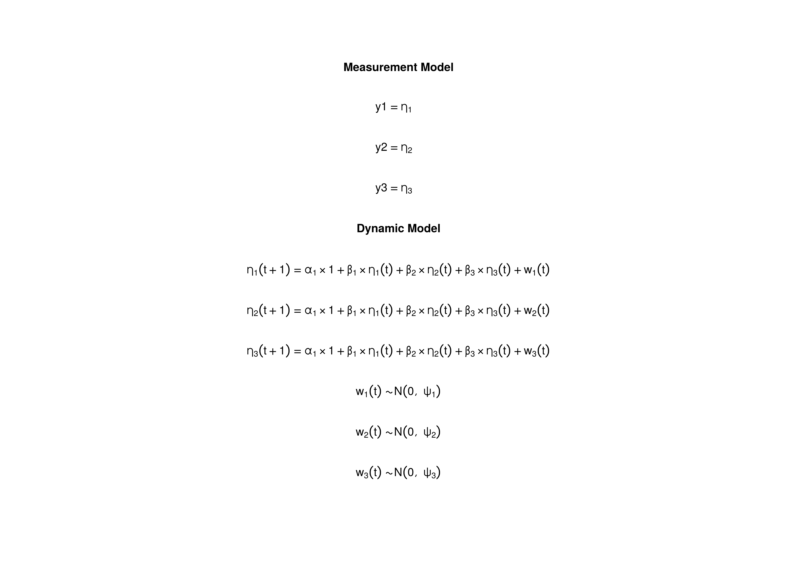

The Vector Autoregressive Model
Ivan Jacob Agaloos Pesigan
2024-11-25
Source:vignettes/var.Rmd
var.RmdModel
The measurement model is given by where represents a vector of observed variables and a vector of latent variables for individual and time . Since the observed and latent variables are equal, we only generate data from the dynamic structure.
The dynamic structure is given by where , , and are random variables, and , , and are model parameters. Here, is a vector of latent variables at time and individual , represents a vector of latent variables at time and individual , and represents a vector of dynamic noise at time and individual . denotes a vector of intercepts, a matrix of autoregression and cross regression coefficients, and the covariance matrix of .
An alternative representation of the dynamic noise is given by where .
Data Generation
Notation
Let be the number of time points and be the number of individuals.
Let the initial condition be given by
Let the constant vector be given by
Let the transition matrix be given by
Let the dynamic process noise be given by
R Function Arguments
n
#> [1] 5
time
#> [1] 1000
mu0
#> [1] 0 0 0
sigma0
#> [,1] [,2] [,3]
#> [1,] 1.0 0.2 0.2
#> [2,] 0.2 1.0 0.2
#> [3,] 0.2 0.2 1.0
sigma0_l
#> [,1] [,2] [,3]
#> [1,] 1.0 0.0000000 0.0000000
#> [2,] 0.2 0.9797959 0.0000000
#> [3,] 0.2 0.1632993 0.9660918
alpha
#> [1] 0 0 0
beta
#> [,1] [,2] [,3]
#> [1,] 0.7 0.0 0.0
#> [2,] 0.5 0.6 0.0
#> [3,] -0.1 0.4 0.5
psi
#> [,1] [,2] [,3]
#> [1,] 0.1 0.0 0.0
#> [2,] 0.0 0.1 0.0
#> [3,] 0.0 0.0 0.1
psi_l
#> [,1] [,2] [,3]
#> [1,] 0.3162278 0.0000000 0.0000000
#> [2,] 0.0000000 0.3162278 0.0000000
#> [3,] 0.0000000 0.0000000 0.3162278Using the SimSSMVARFixed Function from the
simStateSpace Package to Simulate Data
library(simStateSpace)
sim <- SimSSMVARFixed(
n = n,
time = time,
mu0 = mu0,
sigma0_l = sigma0_l,
alpha = alpha,
beta = beta,
psi_l = psi_l
)
data <- as.data.frame(sim)
head(data)
#> id time y1 y2 y3
#> 1 1 0 -1.84569501 0.5815402 0.8057225
#> 2 1 1 -1.34252674 -1.1219724 0.9873906
#> 3 1 2 -0.57123433 -1.1591679 0.1280274
#> 4 1 3 -0.44448720 -0.9783200 -0.3028425
#> 5 1 4 -0.28796224 -1.2222325 -0.3807219
#> 6 1 5 0.01622801 -1.2362032 -1.0056038
summary(data)
#> id time y1 y2
#> Min. :1 Min. : 0.0 Min. :-1.84570 Min. :-2.17817
#> 1st Qu.:2 1st Qu.:249.8 1st Qu.:-0.31071 1st Qu.:-0.42138
#> Median :3 Median :499.5 Median :-0.01764 Median :-0.01740
#> Mean :3 Mean :499.5 Mean :-0.01425 Mean :-0.02021
#> 3rd Qu.:4 3rd Qu.:749.2 3rd Qu.: 0.27870 3rd Qu.: 0.37021
#> Max. :5 Max. :999.0 Max. : 1.56537 Max. : 2.83572
#> y3
#> Min. :-1.774215
#> 1st Qu.:-0.363420
#> Median :-0.005834
#> Mean :-0.009098
#> 3rd Qu.: 0.341318
#> Max. : 1.817859
plot(sim)


Model Fitting
Prepare Initial Condition
dynr_initial <- dynr::prep.initial(
values.inistate = mu0,
params.inistate = c("mu0_1", "mu0_2", "mu0_3"),
values.inicov = sigma0,
params.inicov = matrix(
data = c(
"sigma0_11", "sigma0_12", "sigma0_13",
"sigma0_12", "sigma0_22", "sigma0_23",
"sigma0_13", "sigma0_23", "sigma0_33"
),
nrow = 3
)
)Prepare Measurement Model
dynr_measurement <- dynr::prep.measurement(
values.load = diag(3),
params.load = matrix(data = "fixed", nrow = 3, ncol = 3),
state.names = c("eta_1", "eta_2", "eta_3"),
obs.names = c("y1", "y2", "y3")
)Prepare Dynamic Process
dynr_dynamics <- dynr::prep.formulaDynamics(
formula = list(
eta_1 ~ alpha_1 * 1 + beta_11 * eta_1 + beta_12 * eta_2 + beta_13 * eta_3,
eta_2 ~ alpha_2 * 1 + beta_21 * eta_1 + beta_22 * eta_2 + beta_23 * eta_3,
eta_3 ~ alpha_3 * 1 + beta_31 * eta_1 + beta_32 * eta_2 + beta_33 * eta_3
),
startval = c(
alpha_1 = alpha[1], alpha_2 = alpha[2], alpha_3 = alpha[3],
beta_11 = beta[1, 1], beta_12 = beta[1, 2], beta_13 = beta[1, 3],
beta_21 = beta[2, 1], beta_22 = beta[2, 2], beta_23 = beta[2, 3],
beta_31 = beta[3, 1], beta_32 = beta[3, 2], beta_33 = beta[3, 3]
),
isContinuousTime = FALSE
)Prepare Process Noise
dynr_noise <- dynr::prep.noise(
values.latent = psi,
params.latent = matrix(
data = c(
"psi_11", "psi_12", "psi_13",
"psi_12", "psi_22", "psi_23",
"psi_13", "psi_23", "psi_33"
),
nrow = 3
),
values.observed = matrix(data = 0, nrow = 3, ncol = 3),
params.observed = matrix(data = "fixed", nrow = 3, ncol = 3)
)Prepare the Model
model <- dynr::dynr.model(
data = dynr_data,
initial = dynr_initial,
measurement = dynr_measurement,
dynamics = dynr_dynamics,
noise = dynr_noise,
outfile = "var.c"
)
Fit the Model
results <- dynr::dynr.cook(
model,
debug_flag = TRUE,
verbose = FALSE
)
#> [1] "Get ready!!!!"
#> using C compiler: ‘gcc (Ubuntu 11.4.0-1ubuntu1~22.04) 11.4.0’
#> Optimization function called.
#> Starting Hessian calculation ...
#> Finished Hessian calculation.
#> Original exit flag: 3
#> Modified exit flag: 3
#> Optimization terminated successfully: ftol_rel or ftol_abs was reached.
#> Original fitted parameters: -0.003531293 -0.001280376 0.001523566 0.6895684
#> 0.01390681 -0.003940273 0.4892806 0.6166874 -0.00850994 -0.1131785 0.4157686
#> 0.4948645 -2.314722 -0.02295081 -0.01630225 -2.301541 -0.01437825 -2.302993
#> -0.7217189 0.5433516 0.8634073 -0.2858639 -1.244706 0.1022364 0.00547225
#> 0.08818863 -1.187881
#>
#> Transformed fitted parameters: -0.003531293 -0.001280376 0.001523566 0.6895684
#> 0.01390681 -0.003940273 0.4892806 0.6166874 -0.00850994 -0.1131785 0.4157686
#> 0.4948645 0.09879361 -0.002267393 -0.001610558 0.1001565 -0.001402363 0.1000062
#> -0.7217189 0.5433516 0.8634073 0.7513649 -0.9352283 0.07681685 2.169571
#> -0.006941846 0.3205399
#>
#> Doing end processing
#> Successful trial
#> Total Time: 3.959865
#> Backend Time: 3.949102Summary
summary(results)
#> Coefficients:
#> Estimate Std. Error t value ci.lower ci.upper Pr(>|t|)
#> alpha_1 -0.0035313 0.0044508 -0.793 -0.0122548 0.0051922 0.2138
#> alpha_2 -0.0012804 0.0044814 -0.286 -0.0100638 0.0075031 0.3876
#> alpha_3 0.0015236 0.0044781 0.340 -0.0072533 0.0103004 0.3668
#> beta_11 0.6895684 0.0112672 61.202 0.6674852 0.7116517 <2e-16 ***
#> beta_12 0.0139068 0.0093820 1.482 -0.0044815 0.0322952 0.0692 .
#> beta_13 -0.0039403 0.0095679 -0.412 -0.0226930 0.0148125 0.3402
#> beta_21 0.4892806 0.0113446 43.129 0.4670456 0.5115157 <2e-16 ***
#> beta_22 0.6166874 0.0094464 65.283 0.5981727 0.6352020 <2e-16 ***
#> beta_23 -0.0085099 0.0096336 -0.883 -0.0273915 0.0103716 0.1885
#> beta_31 -0.1131785 0.0113361 -9.984 -0.1353969 -0.0909601 <2e-16 ***
#> beta_32 0.4157686 0.0094393 44.047 0.3972680 0.4342693 <2e-16 ***
#> beta_33 0.4948645 0.0096263 51.408 0.4759973 0.5137317 <2e-16 ***
#> psi_11 0.0987936 0.0019768 49.976 0.0949191 0.1026681 <2e-16 ***
#> psi_12 -0.0022674 0.0014078 -1.611 -0.0050266 0.0004919 0.0537 .
#> psi_13 -0.0016106 0.0014066 -1.145 -0.0043674 0.0011463 0.1261
#> psi_22 0.1001565 0.0020041 49.975 0.0962285 0.1040845 <2e-16 ***
#> psi_23 -0.0014024 0.0014162 -0.990 -0.0041780 0.0013733 0.1611
#> psi_33 0.1000062 0.0020011 49.976 0.0960841 0.1039282 <2e-16 ***
#> mu0_1 -0.7217189 0.3854554 -1.872 -1.4771977 0.0337599 0.0306 *
#> mu0_2 0.5433516 0.6542311 0.831 -0.7389178 1.8256210 0.2031
#> mu0_3 0.8634073 0.2531618 3.410 0.3672192 1.3595954 0.0003 ***
#> sigma0_11 0.7513649 0.4740246 1.585 -0.1777063 1.6804360 0.0565 .
#> sigma0_12 -0.9352283 0.7049527 -1.327 -2.3169103 0.4464537 0.0923 .
#> sigma0_13 0.0768168 0.2221450 0.346 -0.3585794 0.5122131 0.3648
#> sigma0_22 2.1695715 1.3671181 1.587 -0.5099307 4.8490737 0.0563 .
#> sigma0_23 -0.0069418 0.3726743 -0.019 -0.7373700 0.7234863 0.4926
#> sigma0_33 0.3205399 0.2023250 1.584 -0.0760099 0.7170897 0.0566 .
#> ---
#> Signif. codes: 0 '***' 0.001 '**' 0.01 '*' 0.05 '.' 0.1 ' ' 1
#>
#> -2 log-likelihood value at convergence = 8000.08
#> AIC = 8054.08
#> BIC = 8230.05Parameter Estimates
alpha_hat
#> [1] -0.003531293 -0.001280376 0.001523566
beta_hat
#> [,1] [,2] [,3]
#> [1,] 0.6895684 0.01390681 -0.003940273
#> [2,] 0.4892806 0.61668735 -0.008509940
#> [3,] -0.1131785 0.41576863 0.494864534
psi_hat
#> [,1] [,2] [,3]
#> [1,] 0.098793608 -0.002267393 -0.001610558
#> [2,] -0.002267393 0.100156481 -0.001402363
#> [3,] -0.001610558 -0.001402363 0.100006157
mu0_hat
#> [1] -0.7217189 0.5433516 0.8634073
sigma0_hat
#> [,1] [,2] [,3]
#> [1,] 0.75136488 -0.935228319 0.076816849
#> [2,] -0.93522832 2.169571479 -0.006941846
#> [3,] 0.07681685 -0.006941846 0.320539871